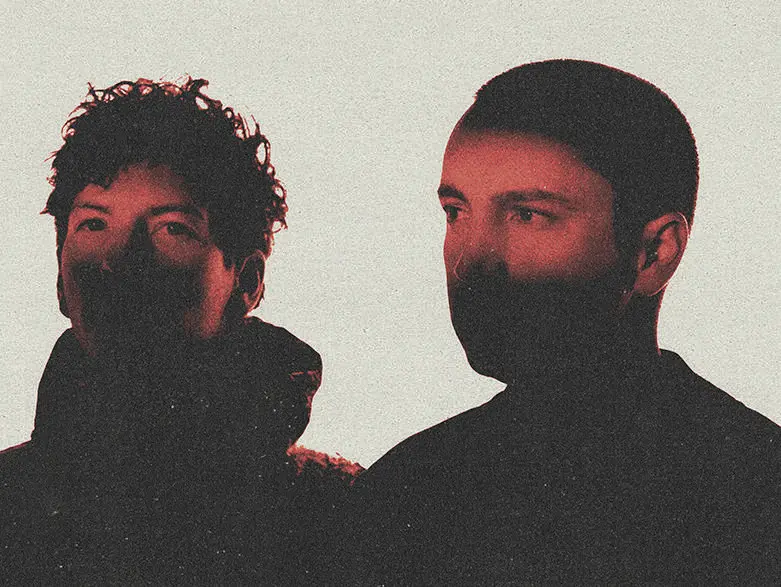
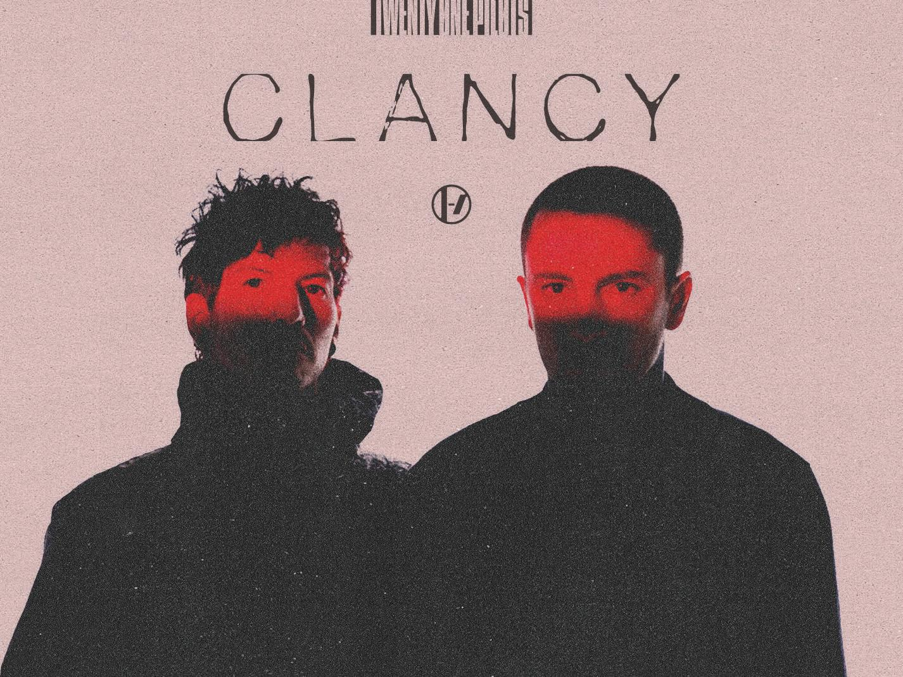

Un universo creado meticulosamente, todo se relaciona con todo.
Todo comenzó contando la historia de Blurryface, el antagonista principal de todo el universo, una personificación de todos los miedos e inseguridades de Tyler.
Toda la historia se expandiria con el álbum Trench. La narrativa alcanzó nuevas profundidades con la publicación de cartas y mensajes publicados en dmaorg.info, una web críptica creada para expandir su historia. Los videoclips del álbum mostraban visualmente el universo creado por el dúo, un mundo distópico en el que se podían encontrar el continente de Trench y la ciudad de DEMA.
DEMA, una ciudad circular de cemento dirigida por 9 obispos y regida por una religión impuesta llamada Vialismo, una glorificación de la auto destrucción. En contraposición se encontraban los Banditos, habitantes del continente de Trench, que luchaban por salvar a las personas capturadas por los obispos.
A lo largo de la historia se fueron descubriendo nuevos personajes y nuevas criaturas como Ned, que apareció por primera vez en el videoclip de Chlorine y comenzó a tomar relevancia con el paso del tiempo.
Explicación y simbologia de elementos claves en el lore.
Blurryface: Es un personaje, concepto central y versión metafórica de Nico y los demás obispos. Apareció en 2015 representando los miedos e inseguridades de Tyler. Se presenta en las canciones con una voz grave y el color que lo distingue es el rojo.
Nico: Nico es uno de los nueve obispos de Dema y específicamente representa a Blurryface, la personificación de las inseguridades y la autocrítica de Tyler. Nico es el líder de los obispos y tiene como objetivo mantener el control sobre Clancy (el alter ego de Tyler) y evitar su escape de Dema.
Obispos: Los Obispos son los gobernantes de Dema y quienes predican el Vialismo, cada uno de ellos representa una forma de control o negatividad emocional. Trabajan colectivamente para mantener a los habitantes atrapados en la ciudad, utilizando tácticas como la manipulación psicológica.
Tyler: Tyler Joseph representa al protagonista y narrador central que enfrenta una constante lucha contra sus inseguridades, miedos y opresores metafóricos.
Josh: Es el líder de los Banditos. Intenta sacar a Tyler y otras personas de Dema, simboliza el apoyo, la hermandad y la fuerza colectiva en la lucha contra los miedos e inseguridades.

El portador de la antorcha: Es un personaje importante en el lore, representa una figura de liderazgo y resistencia contra la opresión que los obispos imponen sobre la población. El portador de la antorcha es identificado como Josh, quien es líder de lo Banditos. Asímismo, la antorcha simboliza la luz de la esperanza y la resistencia contra la oscuridad, siendo un símbolo de los esfuerzos de los Banditos para guiar a los prisioneros de Dema hacia la libertad.
Banditos: Los Banditos son un grupo de resistencia, viven en Trench y representan a quienes han escapado o buscan escapar de Dema, la ciudad controlada por los obispos. Su propósito es liberar a otros de la opresión de Dema y ayudarles a encontrar esperanza y libertad. Los Banditos suelen usar símbolos de color amarillo, ya que los obispos no pueden ver este color.
Clancy: Clancy es Tyler. Él ha escrito cartas contando como se vive en Trench y Dema. Se cree que Tyler firma todas esas cartas bajo el nombre de Clancy para no ser detectado por Dema exponiendo la realidad de la ciudad.
Vialismo: Es el sistema de creencias impuesto por los obispos de Dema para mantener el control sobre sus habitantes. Esta religión está llena de ideales tóxicos y autodestructivos que te llenan de miedos e inseguridades que perjudican tu vida llevándote hacia el suicidio, mientras se disfraza como algo beneficioso o necesario para la sociedad.
Dema: Es la ciudad donde viven los obispos y la gente controlada por su sistema. Tiene forma de Torre de Silencio, inspirado en estructuras funerarias reales de la tradición zoroástrica, donde ponían los cadáveres humanos separándoles por hombres, de mujeres y niños; en el universo de top esta se separa en lápidas, edificios donde están encerradas las personas y las 9 torres correspondientes a cada uno de los 9 obispos.
Trench: Es el continente donde transcurre la historia. Dentro de el se encuentra la ciudad de Dema, un puerto, la isla Voldsøy y entre las montañas alejadas está el campamento de los Banditos, donde estos viven.

Ned: Es una pequeña criatura blanca que aparececió por primera vez en el video musical de Chlorine, su nombre significa "neuroexpansion device” (dispositivo de neuroexpansión), él representa la creatividad de Tyler. Los cuernos de Ned tienen un papel fundamental en la historia, pues ayudan a Tyler a derrotar a los obispos mediante la psicokinesis, estos crecen cuando Ned bebe o nada en cloro.
Psicokinesis: Es la habilidad manipular objetos físicos con la mente, sin necesidad de contacto físico. En el lore de top se usa para manipular personas o seres, esto se hace mediante los cuernos de Ned.
Trash: Es el dragón que sale en la portada del álbum Scaled And Icy, el mismo que fue manipulado por Keons para romper el vidrio del submarino y que los chicos escaparan.
Los obispos predican el vialismo por un motivo: Hacen lo posible para que la gente se suicide y así ellos pueden poseer los cadáveres para ser inmortales, ya que Clancy explico que se pueden llegar a vivir dos vidas, la vida original y la vida que se vive cuando una persona es poseída luego de la muerte en su vida original, ya que al morir la primera vez el cuerpo queda como una vasija disponible para que pueda ser poseído.
Los 9 obispos y sus respectivos miedos son:
Keons: Miedo a la falta de control y de propiedad. Es decir,el temor a estar siempre bajo el control de otros y no tener nada propio.
Andre: El miedo al cambio.
Lisden: El miedo a no conocerse a uno mismo.
Reisdro: El miedo a la ausencia de Dios.
Sacarver: El miedo a ser herido emocionalmente, a la traición y al rechazo.
Nills: El miedo a uno mismo y a la falta de esperanza.
Vetomo: El miedo a la conformidad, a perder el control de lo que se hace y dice.
Listo: El miedo a la vida misma, a la incertidumbre del futuro.